Service Procedure Steps 1 - 25
Important:For detailed component and engine removal information, refer to Engine Replacement Procedure in the Engine Mechanical subsection of the appropriate Service Manual or SI.
1. Drain the engine coolant and engine oil from the engine.
2. Remove the powertrain from the vehicle.
3. Remove the drive belt.
4. Remove the A/C compressor and set it aside.
5. Remove the power steering pump and set it aside.
6. Remove the engine from the transmission.
7. Install the engine on an engine stand.
8. Remove the components necessary to remove the oil pan and lower crankcase including but not limited to the following components:
^ Generator
^ Oil filter adapter
^ Crankshaft balancer
^ Engine front cover
^ Engine front cover gasket
^ Oil pump
^ Lower crankshaft sensor
9. Rotate the engine stand with the oil pan facing up.
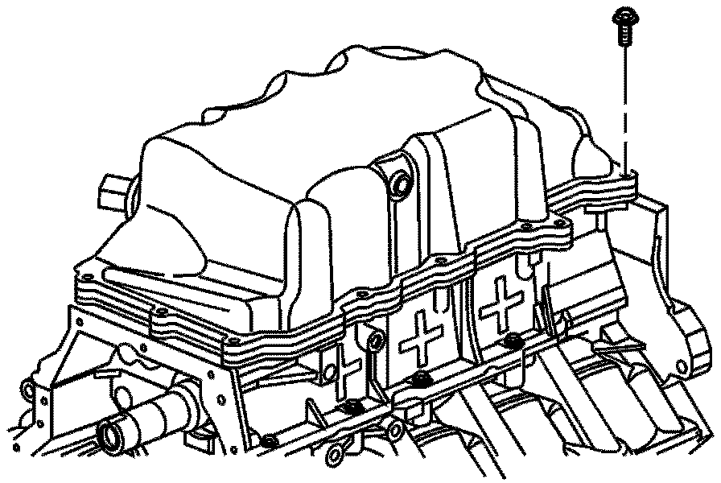
10. Remove the oil pan bolts.
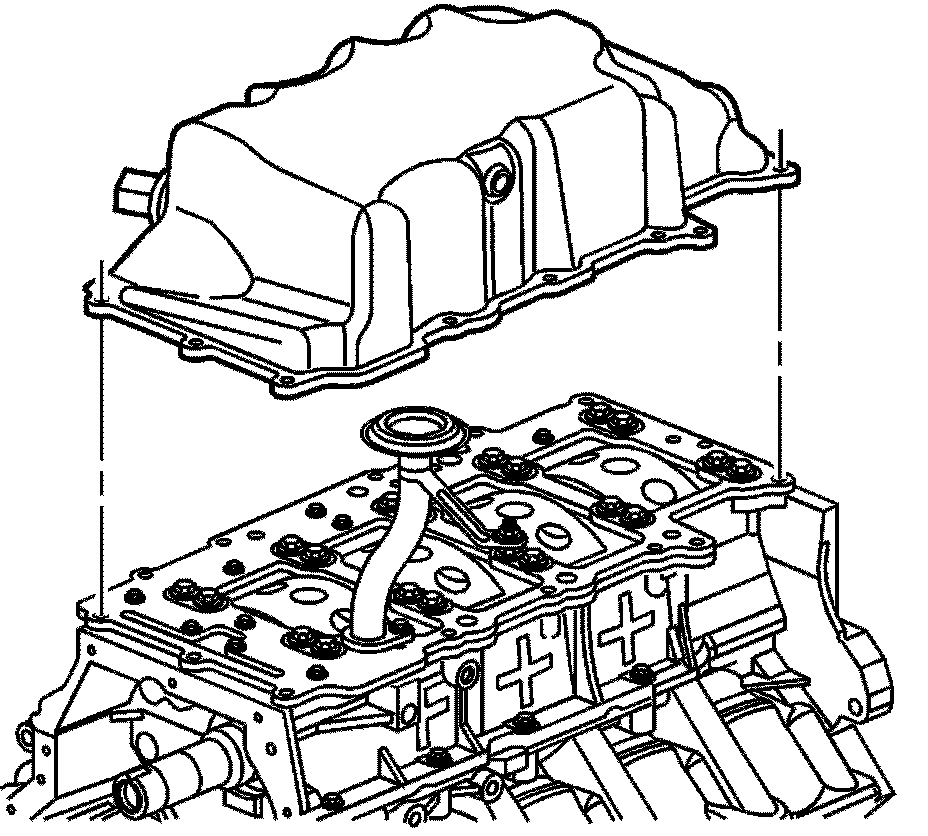
11. Remove the oil pan.
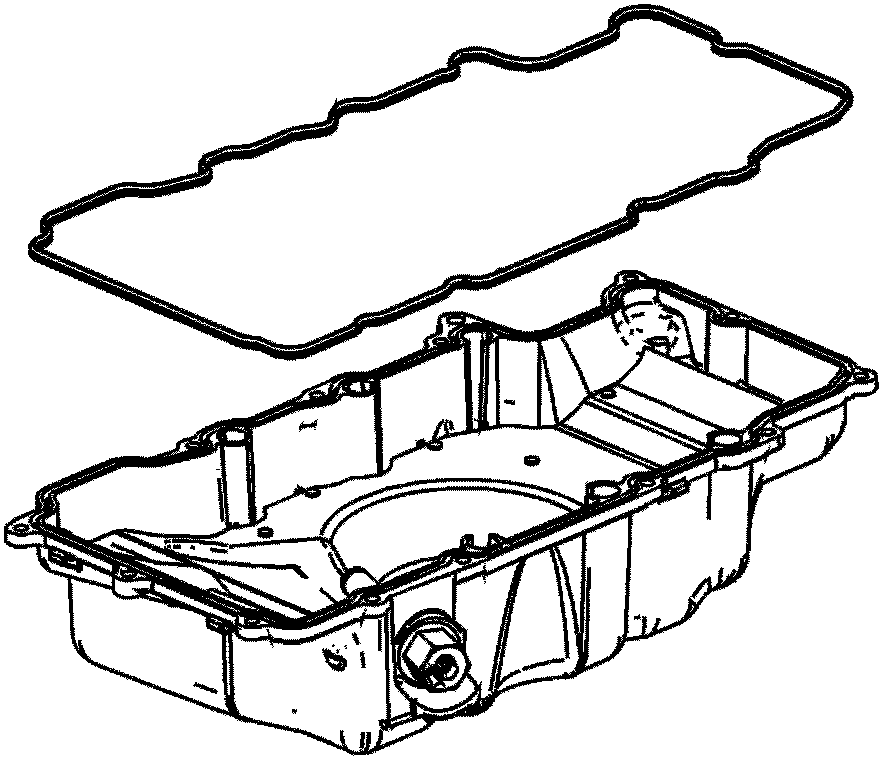
12. Remove the gasket from the oil pan.
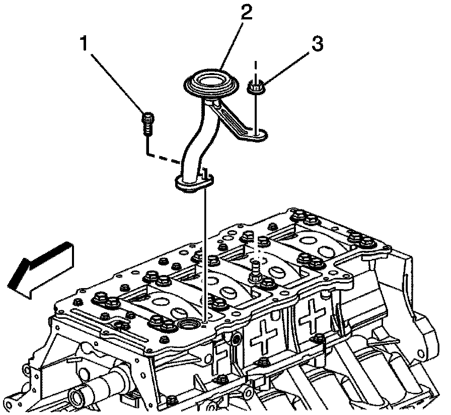
13. Remove the oil suction tube bolt and nut.
14. Remove the oil suction tube.
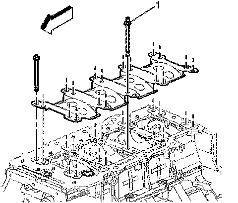
15. Remove the main bearing bolts.
16. Remove the crankshaft oil scraper plate.
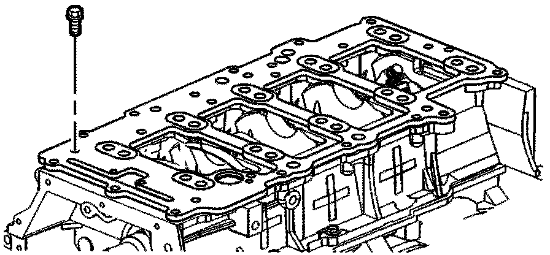
17. Remove the oil distribution plate bolts.
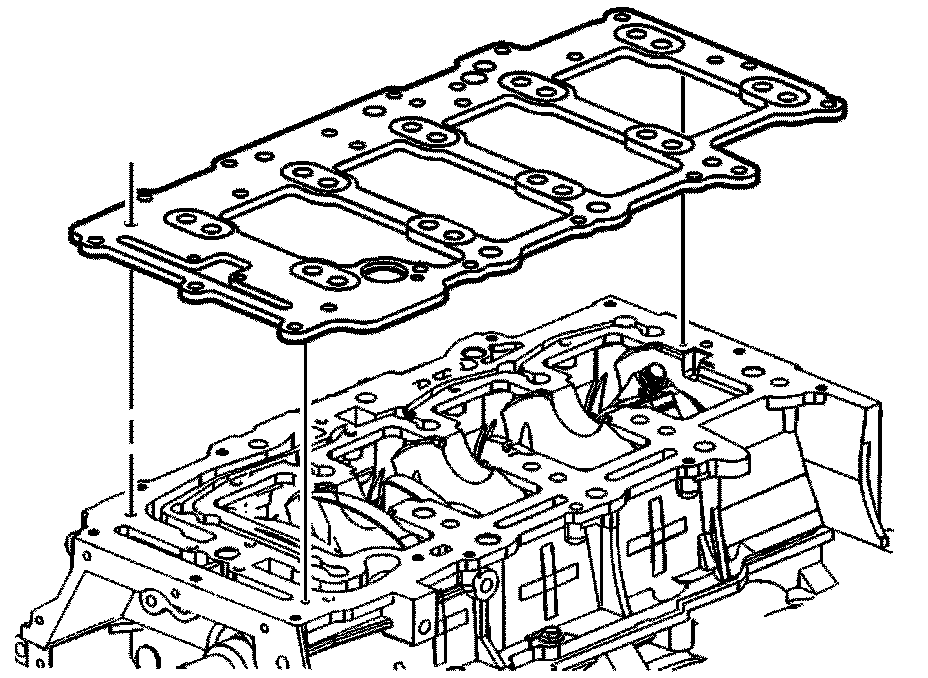
18. Remove the oil distribution plate.
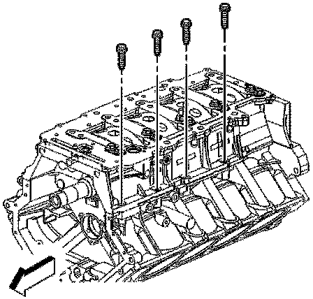
19. Remove the crankcase perimeter bolts on the right side.
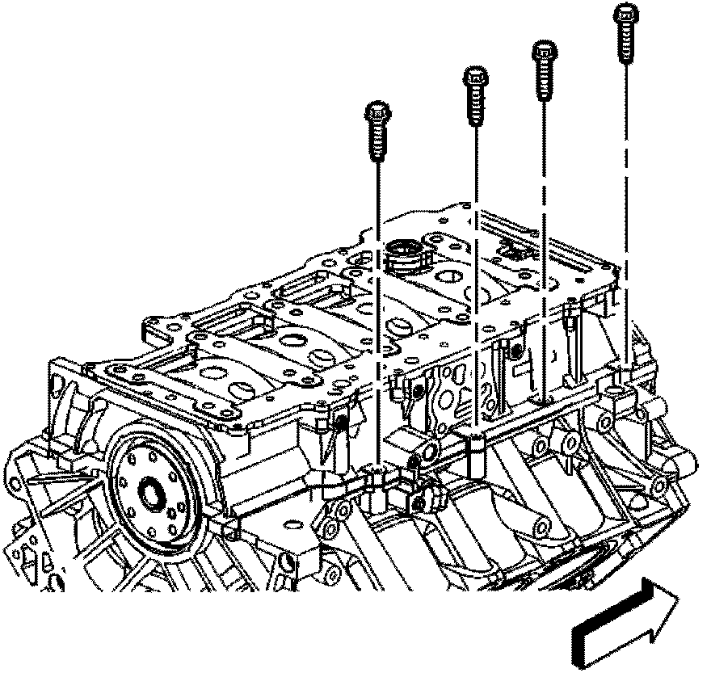
20. Remove the crankcase perimeter bolts on the left side.
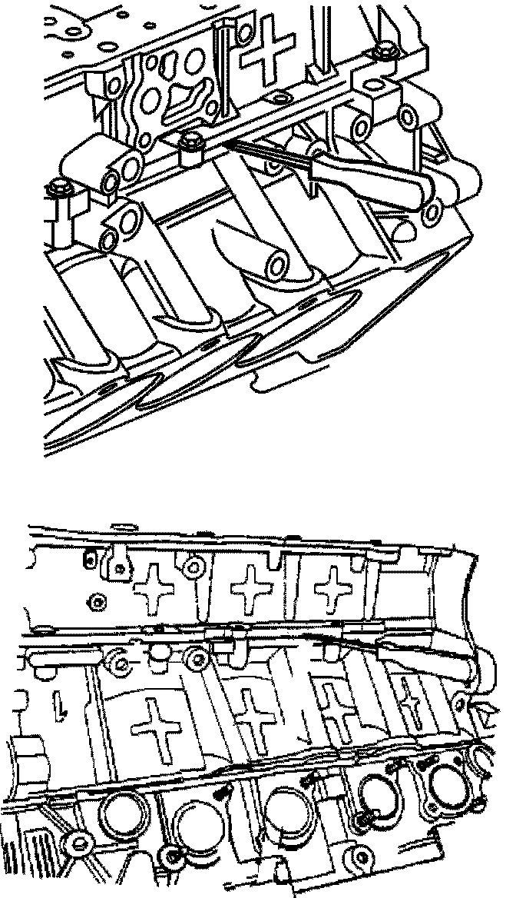
21. Remove the lower crankcase by prying at the designated pry points.
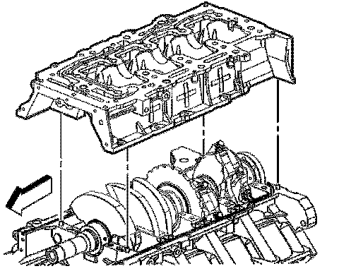
22. Remove the lower crankcase.
23. Remove the rear crankshaft seal. Refer to the Crankshaft Rear Oil Seal Removal procedure in SI.
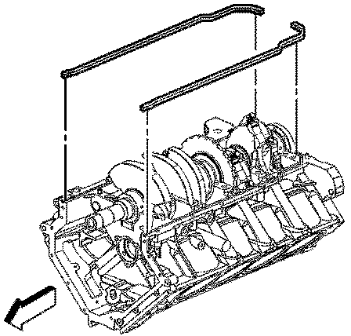
24. Remove the upper-to-lower crankcase seals.
25. Using a suitable scraper clean the anaerobic sealant from the rail surfaces of the block.